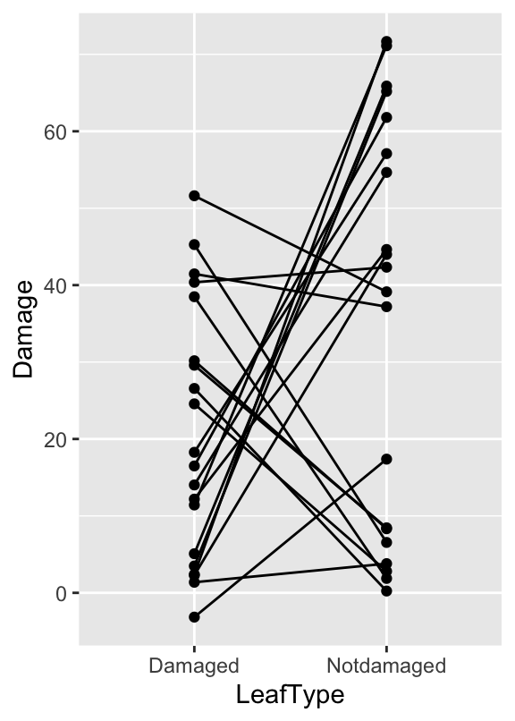
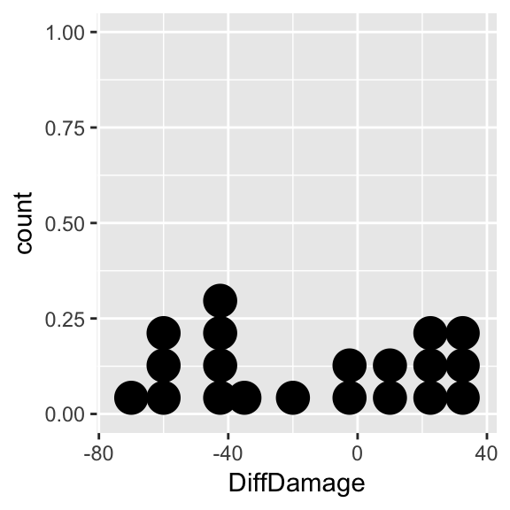
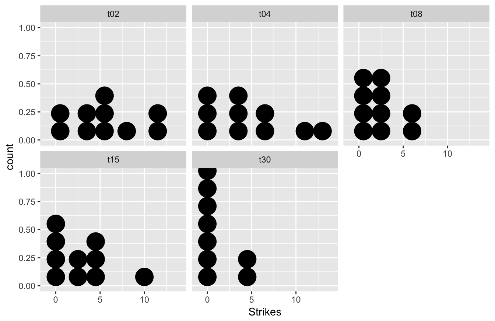
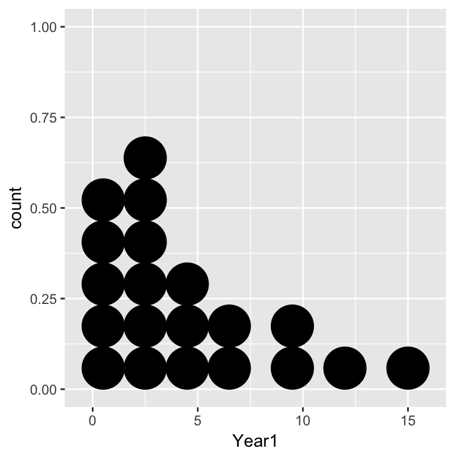
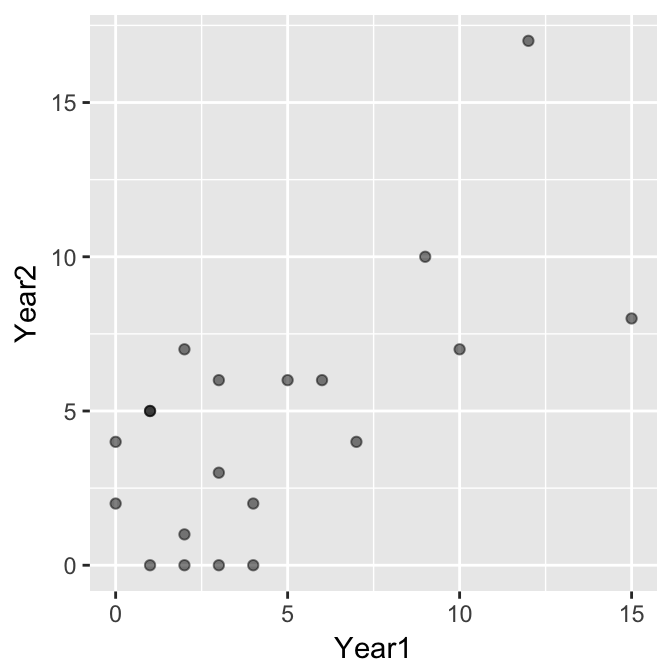

Chapter 33 Non-parametric tests
33.1 What is a non-parametric test?
The majority of procedures we have been using to evaluate statistical significance require various assumptions about population distributions to be satisfied. These are referred to as parametric methods because they are underpinned by a mathematical model of the population(s) (we discussed this idea in the [Parametric statistics] chapter). For this reason, the statistical tests associated with these methods—e.g. global significance tests and multiple comparisons tests in ANOVA—are called parametric tests.
Non-parametric tests are a class of statistical tests that make much weaker assumptions. The advantage of non-parametric tests is that they can be employed with a much wider range of forms of data than their parametric cousins. Although non-parametric tests are less restrictive in their assumptions, they are not, as is sometimes stated, assumption-free. The term non-parametric is just a catch-all term that applies to any test which doesn’t assume the data are drawn from a specific distribution. We have already seen a number of examples of non-parametric tests:
The bootstrap and permutation test procedures introduced in the first few chapters are non-parametric techniques.
The \(\chi^{2}\) goodness of fit and the \(\chi^{2}\) contingency table tests make weak assumptions about the frequency data.
In this chapter we are going to look at non-parametric tests which perform analyses equivalent to t-tests, correlation, and the global significance test in one-way ANOVA.
33.2 How does a non-parametric test work?
The key thing about the non-parametric tests we’ll consider here is that the calculations are done using the rank order of the data, whatever the type of the original data-–-ratio, interval, or ordinal.
The general principle of such a test can be easily illustrated with the following example. Imagine that we want to compare two samples to determine whether they differ in their central tendency. That is, we want to know if the values in one sample tend to be larger or smaller than the values in a second sample. For example…
| Sample A: | 1.3 | 2.8 | 4.1 | 3.2 |
| Sample B: | 7.2 | 3.0 | 4.2 | 6.2 |
If all the data (i.e. from both samples) are put in ascending order…
| Sample A: | 1.3 | 2.8 | 3.2 | 4.1 | ||||
| Sample B: | 3.0 | 4.2 | 6.2 | 7.2 |
Then each number can be given a rank according to its place in the ordering…
| Sample A: | 1 | 2 | 4 | 5 | ||||
| Sample B: | 3 | 6 | 7 | 8 |
It is easy to see now that if the rank values from each sample are added up Sample A will have a lower value (sum = 12) than Sample B (sum = 24). This suggests that sample B has larger values than sample A.
If the samples had been completely non-overlapping the totals would have been…
| Sample A: | 1 + | 2 + | 3 + | 4 | = 10 | ||||
| Sample B: | 5 + | 6 + | 7 + | 8 | = 26 |
On the other hand, if the samples had been largely overlapping the rank totals would have been equal, or close to it…
| Sample A: | 1 + | 4 + | 6 + | 7 | = 18 | ||||
| Sample B: | 2 + | 3 + | 5 + | 8 | = 18 |
Obviously, the greater the difference in the rank totals the less likely it is that the two samples could have come from the same distribution of values—i.e. the more likely it is that difference between them may be statistically significant.
The important thing to notice in such a procedure is that the original data could have been replaced with quite different values which, provided the ordering was the same, would have given exactly the same result. In other words the outcome of the test is reasonably insensitive to the underlying distribution of the data.
33.3 Non-parametric equivalents
There are several non-parametric procedures (all available in R) which provide similar types of test to the simple parametric tests we have seen already. The actual calculations for the different tests are a little more involved than the general outline above, but they work from the same basic principle: find the rank order of all the data, and then use the ranks in different groups to assess the statistical significance of the observed differences. As always, we have to specify some kind of null hypothesis (e.g. the medians of two samples are the same) to make the significance calculation work.
The four tests discussed here are:
Wilcoxon signed-rank test: The test is equivalent to a one-sample and paired-sample t-test. This test also goes by the name of the Wilcoxon one-sample test, the Wilcoxon matched-pairs test, the Wilcoxon paired-sample test. It can be used to…
- compare a sample to a single value, or
- test for differences between paired samples.
Mann-Whitney U-test: This is equivalent to the two-sample t-test. It tests for differences between two unpaired samples. This test also goes by the name of the Wilcoxon two-sample test, the Mann–Whitney–Wilcoxon, Wilcoxon rank-sum test.
Kruskal-Wallis test: tests for differences between several samples. This is equivalent to a one-way analysis of variance.
Spearman’s Rank correlation: tests for an association between two variables. This is equivalent to Pearson’s correlation.
Notice that we haven’t said anything about what kind of differences among samples these evaluate, i.e. we didn’t specify the null hypothesis. We’ll address this question as we discuss each test.
33.4 Wilcoxon signed-rank test
The most widely used non-parametric equivalent to the one-sample t-test is the Wilcoxon signed-rank test. The test can be used for any situation requiring a test to compare the median of a sample against a single value. However, it is almost always used to analyse data collected using a paired-sample design, so we’ll focus on that particular application of the test. The Wilcoxon signed-rank test makes less stringent assumptions than the t-test, but it does make some assumptions:
The variable being tested is measured on ordinal, interval, or ratio scales
The (population) distribution of the variable is approximately symmetric33.
The first assumption is simple enough—the variable can be anything but nominal. The second assumption essentially means that it doesn’t matter what form the distribution of the variable looks like as long as it is symmetric—it would not be satisfied if the distribution were strongly right- or left-skewed.
As with the t-test, when applied to paired-sample data the Wilcoxon signed-rank test starts by finding the differences between all the pairs, and then tests whether these differences are significantly different form zero. The distribution under consideration is the distribution of differences between the pairs. Remember, this distribution will often be approximately normal even when the connected samples are not themselves drawn from a normal distribution. This means that even if the samples have odd distributions, we may still find that we can use a paired-sample t-test if differences have a perfectly acceptable distribution. However, if the distribution of differences is not normal then the Wilcoxon signed-rank test provides an alternative.
The following is an example of a situation where the Wilcoxon signed-rank test would be appropriate.
33.4.1 Leaf damage, plant defences and feeding by winter moth larvae
It has been hypothesised that plants respond to physical damage to their leaves from herbivores such as lepidopteran larvae by increasing production of defensive compounds such as phenolics. In an experiment to test this effect, birch saplings were subjected to artificial leaf damage (hole punching) on half the leaves on selected branches. After 24 h undamaged leaves from both the branches with hole-punched leaves and others distant from the damage site were collected and used in a choice test experiment with winter moth larvae. Twenty trials were carried out with a single caterpillar in each trial, offered one of each type of leaf (i.e. one leaf from close to the damage site and one from an undamaged area). The percentage of each leaf consumed was estimated (to the nearest 5%) after 24h.
The data are in the file LEAF_DAMAGE.CSV:
## Rows: 40
## Columns: 3
## $ ID <int> 1, 2, 3, 4, 5, 6, 7, 8, 9, 10, 11, 12, 13, 14, 15, 16, 17, 1…
## $ LeafType <chr> "Notdamaged", "Notdamaged", "Notdamaged", "Notdamaged", "Not…
## $ Damage <int> 65, 0, 10, 45, 55, 45, 0, 10, 5, 70, 55, 40, 0, 70, 65, 35, …There are three variables: ID contains a unique identifier for each pair of leaves in a trial (1-20), Leaf identifies the type of leaf (‘Damaged’ vs. ‘Undamaged’), and Damage contains the percent damage score. As always, it’s a good idea to visualise the data:
jitter_leaves <- mutate(leaves, Damage = jitter(Damage, factor = 4))
ggplot(jitter_leaves, aes(x = LeafType, y = Damage, group = ID)) +
geom_point() + geom_line() 
It’s not critical to learn it, but we used a new trick here: using mutate, we ‘jittered’ the Damage values (with the jitter function) to deal with the overplotting. This adds a bit of random noise to the values so that those with the same values end up being plotted in different highlights two features of the data: 1) There is plenty of variation (some larvae just eat more than others), 2) there is a tendency for larvae to prefer the undamaged leaves, though the pattern is not overwhelming.
Obviously we need a statistical test—a paired sample t-test or a Wilcoxon signed-rank test are our two options. We should also visualise this distribution of within larvae differences to determine whether or not we need to use a Wilcoxon signed-rank test:
# step 1 -- calculate the differences
leaves_diff <-
leaves %>%
group_by(ID) %>%
summarise(DiffDamage = diff(Damage))## `summarise()` ungrouping output (override with `.groups` argument) There are large differences in both directions and the distribution does not seem to be normal (it is very ‘flat’). The problem here is that caterpillars often spend time feeding on the first leaf they encounter, which is a more or less random choice; some may change leaves in quickly in response to the quality of the leaf, others may feed for sometime before leaving the leaf. We might still expect those on better defended leaves to feed less, as the leaves should be less palatable, but they may not make the behavioural decision to leave the leaf during the short period of the experiment (the experiment cannot go on for longer because the leaves change chemically the longer they are detached from the plant)
The distribution may not be normal, but it is roughly symmetrical. The symmetry assumption of the Wilcoxon signed-rank test seems to be satisfied, so we can use this test to examine whether there is any difference in caterpillar feeding on leaves from damaged areas and undamaged areas. We carry out the test using the wilcox.test function in R34. This is used in exactly the same way as the t.test function for a paired-sample design:
## Warning in wilcox.test.default(x = c(5L, 25L, 30L, 40L, 15L, 5L, 35L, 45L, :
## cannot compute exact p-value with ties## Warning in wilcox.test.default(x = c(5L, 25L, 30L, 40L, 15L, 5L, 35L, 45L, :
## cannot compute exact p-value with zeroes##
## Wilcoxon signed rank test with continuity correction
##
## data: Damage by LeafType
## V = 50.5, p-value = 0.07617
## alternative hypothesis: true location shift is not equal to 0We must remember to set paired = TRUE. If we forget to do this R will carry out the two-sample version of the test (the Mann-Whitney U-test discussed next). R produces a couple of warning here but we can usually ignore these—we can’t do much about them even if we wanted to.
The elements of the output should be fairly easy to understand by now. At the top we see a summary of the test and the data:
## Wilcoxon rank sum test with continuity correction
## data: Damage by LeafTypeNext, we see the results: a test statistic and p-value. Although the test statistic is given as ‘V’ in the output, it is often quoted as ‘W’ when writing it in a report (we’ll adopt this convention). This seems a bit odd, but it stems from the fact that there is some variation in the literature about what we report, and how to report, non-parametric tests.
The p-value is close to p = 0.05, but it doesn’t quite fall below the threshold. It looks like there is no significant difference in feeding rates on the two types of leaf. We might report this as:
When given a choice, winter moth larvae did not consume larger amounts of the leaves collected from areas of the tree that are undamaged than those from damaged areas (Wilcoxon matched-pairs test: W = 139.5, n = 20, p = 0.076).
33.5 The Mann-Whitney U-test
The Mann-Whitney U-test is the non-parametric equivalent to the independent two-sample t-test. The test can be used for any situation requiring a test to compare the median of two samples. The assumptions of the Mann-Whitney U-test are:
The variable being tested is measured on ordinal, interval, or ratio scales
The observations from both groups are independent of one another.
The first two assumptions are straightforward—data can be anything but nominal, and as with a paired-sample t-test, there must not be any dependence between the observations. Though not strictly necessary for the Mann-Whitney U-test to be valid, we usually add a third assumption:
- The distribution of the variable in each group is similar (apart than the fact that they have a different central tendency)
This assumption essentially means that it doesn’t matter what the distributions of the two samples are like, but they should be at least roughly similar—it would not be satisfied if we plan to compare data from a strongly right-skewed distribution with data from a strongly left-skewed distribution. If this assumption is not satisfied the test can still be used, but a significant result is hard to interpret (so don’t bother!).
When all three of the above assumptions are satisfied the Mann-Whitney U-test is used as a way of looking for differences between the central tendency of two distributions. A two-sample t-test evaluates the statistical significance of differences between two means. The null hypothesis of the Mann-Whitney U-test (if all three of the above assumptions) is that the two distributions have the same median . A significant p value therefore indicates that the medians are likely to be different.
33.5.1 Ant foraging
Let’s use the Red wood ants example from the chapter on transformations to see how to carry out the Mann-Whitney U-test. The data are the file ANTS1.CSV (not ANTS2.CSV!). Recall that this study measured the total biomass of prey being transported—the rate of food collection per ant per half hour—on three different tree species (rowan, sycamore and oak). The Tree variable contains the identities and the Food variable contains the food collection rates. Since we the Mann-Whitney U-test only compares two samples, we will focus on the oak and sycamore here to illustrate the test35.
After reading the data into R we need to use the filter function to remove ‘Rowan’ cases:
The Tree != "Rowan" inside the filter function specifies that we want cases where Tree is not equal to (!=) ‘Rowan’.
Carrying out a Mann-Whitney U-test in R is simple enough, but somewhat confusingly, we have to use the wilcox.test function again. This is because, as we noted above, the Mann-Whitney U-test is also called a two-sample Wilcoxon test.
The wilcox.test function for an independent two-sample design works just like the corresponding analysis with the t.test function. The first argument should be a formula, and the second should be the data frame containing the relevant variables:
## Warning in wilcox.test.default(x = c(20.1, 47.4, 85.6, 17.1, 5.7, 7.8, 28.8, :
## cannot compute exact p-value with ties##
## Wilcoxon rank sum test with continuity correction
##
## data: Food by Tree
## W = 453.5, p-value = 0.06955
## alternative hypothesis: true location shift is not equal to 0The formula (Food ~ Tree) works in the same way as other statistical function in R: the variable containing the values we wish to compare (Food) is on the left hand side of the ~ and the variable containing the group identities (Tree) belongs to the right of it.
The output from a Mann-Whitney U-test is similar from that produced by the t.test function. At the top we see a summary of the test and the data:
## Wilcoxon rank sum test with continuity correction
## data: Food by TreeThis version of the Wilcoxon test is the same thing as a Mann-Whitney U-test so there is nothing to worry about here. After this line we see a test statistic (’W’ilcoxon) and the associated p-value. Since p=0.07, we conclude the rates of removal of prey biomass were not significantly different between ants foraging in oak and in sycamore. In a report the conclusion from the test can be summarised…
The rates of removal of prey biomass were not significantly different between ants foraging in oak and in sycamore (Mann-Whitney U-test: U=453.5, n1=26, n2=27, p=0.07).
Notice how the statistics were reported. Because we are describing the test as a Mann-Whitney U-test, it is conventional to quote the test statistic as ‘U’, rather than ‘W’. If we had decided to present the test as a two-sample Wilcoxon test the test can be summarised…
The rates of removal of prey biomass were not significantly different between ants foraging in oak and in sycamore (two-sample Wilcoxon test: W=453.5, n1=26, n2=27, p=0.07).
…remembering to change the name (‘two-sample Wilcoxon test’) and label (‘W’) used to describe the test statistic. In either case, we also have to provide the sample sizes associated with each tree group so that a reader can judge how powerful the test was.
33.6 The Kruskal-Wallis test
The Kruskal-Wallis is the non-parametric equivalent to one-way ANOVA. The Kruskal-Wallis test allows us to test for differences among more than two samples. Like the other rank-based tests we have encountered it has some assumptions, but these are less restrictive than those for ANOVA. The assumptions are essentially the same as those for the Mann-Whitney U-test:
The variable being tested is measured on ordinal, interval, or ratio scales
The observations from both groups are independent of one another.
The distribution of the variable in each group is similar (apart than the fact that they have a different central tendency)
The third assumption is important, particularly with respect to the skewness of the distributions. The test is at least reasonably robust to differences in the dispersion, but the Kruskal-Wallis test should not be used if the skewness of the variable is different among groups is very different. The reason for this is—just as with Mann-Whitney U-test—that a significant result is hard to interpret.
When all three of the above assumptions are satisfied the Kruskal-Wallis is used as a way of looking for differences in the central tendency of two or more groups groups. A one-way ANOVA evaluates the statistical significance of differences between means of these groups. The null hypothesis of the Kruskal-Wallis test (if all three of the above assumptions) is that the groups have the same median. A significant p value therefore indicates that the medians are likely to be different.
33.6.1 Learning in cuttlefish
In a study of the ability of cuttlefish to learn, an experiment was conducted to determine how the length of exposure to a situation influenced the learning process. Cuttlefish feed on prawns. If they are presented with prawns in a glass tube they strike at them but, obviously, fail to capture the prey. Not surprisingly, after a period of this fruitless activity, they give up striking at the prawns.
In the experiment, 50 cuttlefish were divided at random into 5 groups of 10 and cuttlefish from each group were presented with prawns in glass tubes for different lengths of time: 2 min., 4 min., 8 min., 15 min., and 30 min. for the 5 groups respectively. After 24 hours the same cuttlefish were presented with prawns again and the number of strikes they made (over a fixed period) were recorded.
The data are in the file CUTTLEFISH.CSV. There are two variables: Strikes contains the number of strikes recorded and Time identifies the groups (period of previous exposure):
## Rows: 50
## Columns: 2
## $ Strikes <int> 5, 12, 11, 4, 1, 6, 8, 3, 0, 5, 0, 13, 0, 3, 0, 7, 3, 4, 6, 1…
## $ Time <chr> "t02", "t02", "t02", "t02", "t02", "t02", "t02", "t02", "t02"…Take need to understand the data. Dot plots for each treatment will work here:
 The data are clearly very variable. The combination of the apparent skew and the fact that the data are generally small whole numbers with several equal values in each sample, means that we may not be very successful in using a transformation to beat the data into shape. Let’s use the Kruskal-Wallis test instead.
Predictably, the R function to carry out a Kruskal-Wallis test is called kruskal.test, and it is used in exactly the same way as every other statistical modelling function we have looked at:
##
## Kruskal-Wallis rank sum test
##
## data: Strikes by Time
## Kruskal-Wallis chi-squared = 11.042, df = 4, p-value = 0.0261And… one more time… the elements of the output should be easy to work out. These are a statement of the test used and the data, followed by the results: a test statistic (another type of \(\chi^2\) statistic), a degrees of freedom, and the all-important p-value.
We report all of these when writing up results of a Kruskal-Wallis test. However, there is some disagreement in the literature how to report a Kruskal-Wallis test—some people report the statistic as a \(\chi^2\), while others refer to it as an ‘H’ statistic. We will follow the common convention of reporting it as an ‘H’ value.
The test (as with ANOVA) tells us that there is at least one difference among the groups, but it doesn’t tell where the difference or differences are. The output does not give the medians so we cannot judge how the samples are ordered. We can use dplyr to calculate the group-specific medians though:
## `summarise()` ungrouping output (override with `.groups` argument)## # A tibble: 5 x 2
## Time Median
## <chr> <dbl>
## 1 t02 5
## 2 t04 3.5
## 3 t08 2.5
## 4 t15 2.5
## 5 t30 0In this case it is fairly clear that longer periods of exposure to the protected prawn do seem to result in fewer strikes in the later trial. Once we understand what is driving the significant result we’re in a position to write a summary:
The frequency with which the cuttlefish attacked the prawns was significantly affected by the length of time for which they had been exposed to protected prawns 24h earlier (Kruskal-Wallis test: H=11.04, d.f.=4, p<0.05), with longer prior exposure resulting in lower attack rates.
If it was important to know exactly which treatments were significantly different, then some sort of multiple comparison test would be useful. There are no non-parametric multiple comparison tests available in base R, but they are implemented in the package called nparcomp.
33.7 Spearman’s rank correlation
Spearman’s rank correlation (\(\rho\)) tests for an association between two numeric variables. It is equivalent to Pearson’s correlation. The advantages of using Spearman’s rank correlation are: 1) the two variables do not need to be normally distributed, and 2) ordinal data can be used. This means Spearman’s rank correlation can be used with data having skewed (or other odd) distributions, or with data originally collected on a rank/ordinal scale.
The key assumptions of Spearman’s rank correlation are:
Both variables are measured on ordinal, interval or ratio scales.
There is a monotonic relationship between the two variables.
A monotonic relationship occurs when, in general, the variables increase in value together, or when the values of one variable increase, the other variable tends to decrease. What this means in practice is that we should not use Spearman’s rank correlation if a scatter plot of the data forms a clear ‘hill’ or ‘valley’ shape.
Spearman’s rank correlation is somewhat less powerful (roughly 91% in some evaluations) than Pearson’s method when the data are suitable for the latter. Otherwise it may even be more powerful. We’ll work through an example to learn about Spearman’s correlation…
33.7.1 Grouse lekking
Some bird species, at a particular point in the spring, form ‘leks’—gatherings of birds, with males each defending a small area of ground, displaying, and each mating with such females as he is successful in attracting. In general, in leks, a few birds secure many matings and most birds secure rather few. In a study of lekking in black grouse, a biologist is interested in whether birds that secure many matings in one season also do better the next year. Using a population with many colour-ringed birds he is able to get data for a reasonable number of males from two leks in successive years.
The data are in the file GROUSE.CSV. Read these data into a data frame, calling it grouse.
## Rows: 20
## Columns: 2
## $ Year1 <int> 3, 15, 4, 3, 4, 9, 1, 0, 2, 7, 3, 2, 6, 0, 1, 12, 2, 1, 5, 10
## $ Year2 <int> 6, 8, 0, 0, 2, 10, 5, 4, 1, 4, 3, 7, 6, 2, 5, 17, 0, 0, 6, 7Each row of the data is the number of matings for a male in the two successive leks: Year1 (year 1) and Year2 (year 2). The first thing we should do is summarise the distribution of each variable:
ggplot(grouse, aes(x = Year1)) + geom_dotplot(binwidth = 2)
ggplot(grouse, aes(x = Year2)) + geom_dotplot(binwidth = 2)
Notice that the data are integer-valued (i.e. they are counts). These distributions seems to tie in with the biological observation that the distribution of matings is right-skewed: in both years there are only a few males that have high mating success, with most males securing only a handful of matings. Next we need to visualise the association:

The data are integers, which means there is a risk of over-plotting (points will lie on top of one another). We made the points semi-transparent alpha = 0.5 to pick this up where it occurs. It seems clear that mating success is positively associated, but we should confirm this with a statistical test. We’ll base this on Spearman’s correlation.
How do we know to use a correlation analysis with these data? Although there seems to be an association between the counts, it is not obvious that success in one year ‘causes’ success in another year and neither variable is controlled by the investigator. We’re also not interested in using the success measure in year 1 to predict success in year 2. This indicates that correlation analysis is the appropriate method to evaluate the significance of the association.
Why are we using Spearman’s correlation? The relationship appears roughly linear, so in that regard Pearson’s correlation might be appropriate. However, the distribution of each count variable is right-skewed, which means the normality assumption is probably suspect in this instance. We’re left with no choice but to use Spearman’s correlation.
Carrying out a correlation analysis using Spearman’s rank correlation in R is simple. Again, we use the cor.test function to do this:
## Warning in cor.test.default(x = c(3L, 15L, 4L, 3L, 4L, 9L, 1L, 0L, 2L, 7L, :
## Cannot compute exact p-value with ties##
## Spearman's rank correlation rho
##
## data: Year1 and Year2
## S = 592.12, p-value = 0.01112
## alternative hypothesis: true rho is not equal to 0
## sample estimates:
## rho
## 0.5547952The only other thing we had to change, compared to the Pearson’s correlation example, was to set method = "spearman" to specify the use of Spearman’s rank correlation. Notice the warning message: ‘Cannot compute exact p-value with ties’. This is generally not something we need to worry about for this particular test.
The output is very similar to that produced by cor.test when using Pearson’s correlation. Once again, the S = 592.12, p-value = 0.01112 line is the one we care about. The main difference is that instead of a t-statistic, we end up working with a different kind of test statistic (‘S’). We aren’t going to explain where this comes from because it’s quite technical. Next we see the p-value. This is generated under the null hypothesis of zero correlation (\(\rho = 0\)). Since p < 0.05, we conclude that there is a statistically significant correlation between mating success in successive years. Wait, where are the degrees of freedom? Simple—there aren’t any for a Spearman’s correlation test.
What is the correlation between mating success? That’s given at the bottom of the test output again: \(+0.55\). This says that there is a moderate, positive association between mating success in successive years, which is what we expect from the scatter plot.
When using the Spearman method it is fine to report just the value of the correlation coefficient, the sample size, and the p-value (there is no need to report the test statistic). Here’s how to report the results of this analysis:
There is a positive association between the number of matings achieved by a particular male in one lek and the number the same male achieves in a subsequent lek (Spearman’s rho=0.55, n=20, p < 0.05).
33.8 Why use non-parametric tests … and when?
33.8.1 What are the advantages?
Since most non-parametric tests make relatively weak assumptions about the distribution of the data, they are obviously useful techniques for many situations where the data we have are not well suited to parametric tests. If in doubt, a non-parametric test may be a safe bet. Importantly, since non-parametric tests work with ranks of the original data, they can be used to analyse data originally collected in ordinal, or rank, form.
This is extremely useful in many investigations where the data cannot be collected any other way for example…
Subjects in a psychology experiment might be asked to rank a series of photographs of people in order of attractiveness
A panel of tasters judging the sweetness of wines may be able to score sweetness on a rank scale
Encounters between animals might be scored on the basis of the aggressive behaviours shown which can be put in rank order (retreats, stands ground passively, fights when attacked, initiates attack)
The apparatus for making actual measurements might be unavailable—but relative comparisons can be made by direct observation, perhaps in the field—e.g. ‘greenness’ of leaves, turbidity of water, crawling speed of caterpillars, order of dung fly species arrival on a new dung pat, etc.
33.8.2 What are the disadvantages?
Given their advantages, there has to be a catch otherwise everyone would use non-parametric tests all the time. In fact, they are usually used as a last resort.
One problem with non-parametric tests is that if the data are actually appropriate for a parametric test the equivalent non-parametric test will be less powerful (i.e. less likely to find a difference even if there really is one). For some tests the difference is not enormous—for example, if data are suitable for a t-test the Mann-Whitney U-test is about 95% as powerful as the t-test. For this reason, an appropriate transformation followed by a parametric test will yield a more powerful analysis.
A second limitation of non-parametric tests is that by their very nature, they are less informative than parametric tests. For example, if we find a significant differences between group medians using a Kruskal-Wallis test, it can be difficult to understand which differences are driving the significant effect (methods are available, but they are not easy to use). On the other hand, if we can determine a suitable transformation and use an ANOVA model we can deploy tools such as multiple comparison tests to better understand the data.
Parametric models make stronger distributional assumptions about the data, but in some ways they are much more flexible than non-parametric tests, i.e. there are non-parametric equivalents to some parametric tests, but there are many parametric tests for which there is no readily available non-parametric equivalent (e.g., the more complex designs of ANOVA). There is a non-parametric equivalent to ANOVA for complete randomized block design with one treatment factor, called Friedman’s test (available via the friedman.test function in R), but beyond that the options are very limited unless we are able to use advanced techniques such as the bootstrap.
33.8.3 Parting words
Inappropriately distributed data can result in incorrectly high or low p-values. We should choose the statistical model we use on the basis of what the data look like in relation to the assumptions of the model, and reasons in principle, even if not clearly evident in a small sample, why the population from which the data are drawn might be expected to violate the test assumptions. On the principle that biological data rarely, if ever fully comply with the assumptions of parametric tests, it is sometimes advocated that non-parametric tests should always be used. This is not very good advice. There is more to statistics than just calculating p-values, and where possible, we prefer readily intepretable models to more ‘black box’ approaches. Use both approaches as appropriate and be aware of the strengths and weaknesses of each.
There is an alternative to the Wilcoxon test which doesn’t make an assumption about the distribution being symmetrical—called the sign test. This can be done in R, but there isn’t a dedicated function for the sign test, and in any case, it is not very powerful with smaller sample sizes.↩︎
There are two different ways to use the
wilcox.testfunction for a paired design. These are analogous to the two methods used to carry out a paired sample t-test: the first uses the raw data and makes use of the R’s formula system. The second supplies the function with a vector of differences↩︎Of course, if we really were interested in the difference between sycamore, oak and rowan we should use a different test.↩︎